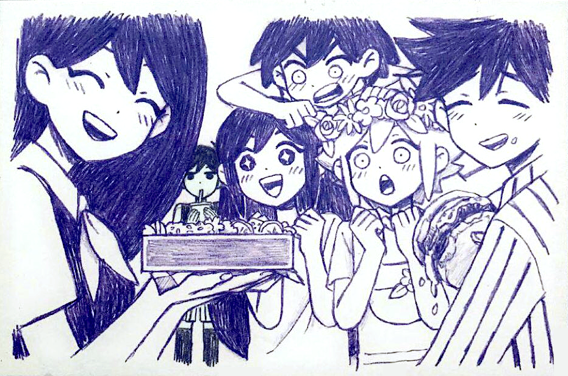
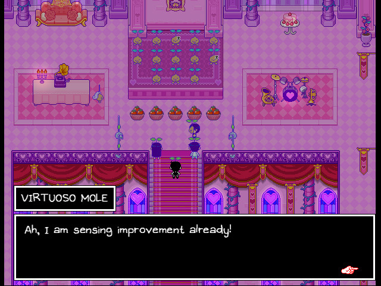
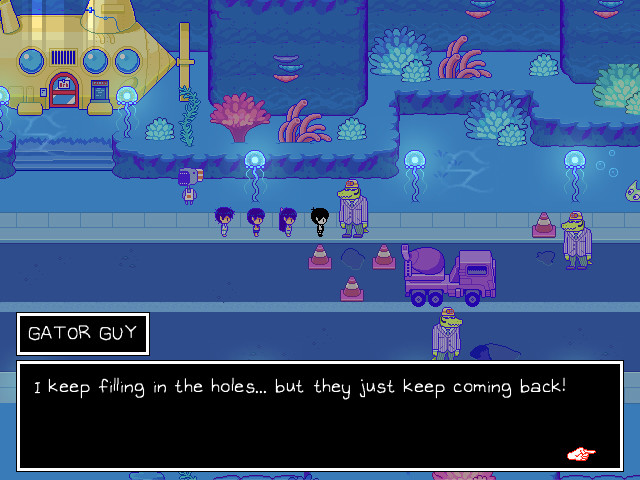
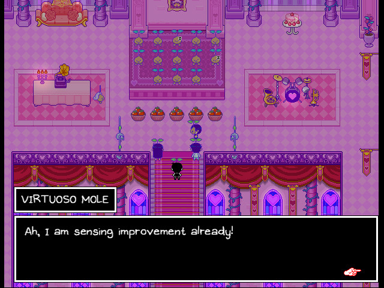
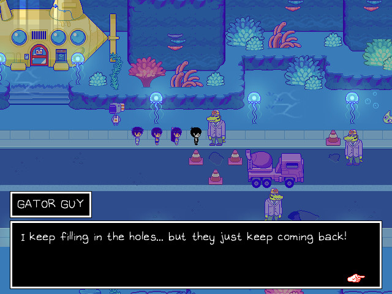
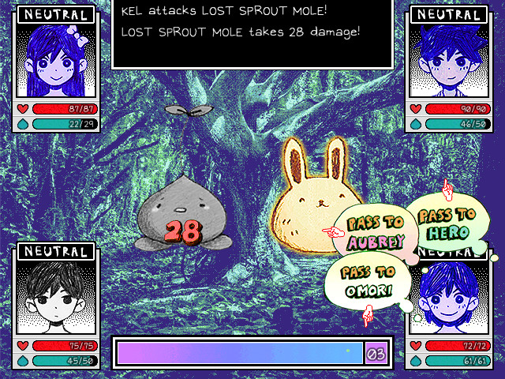
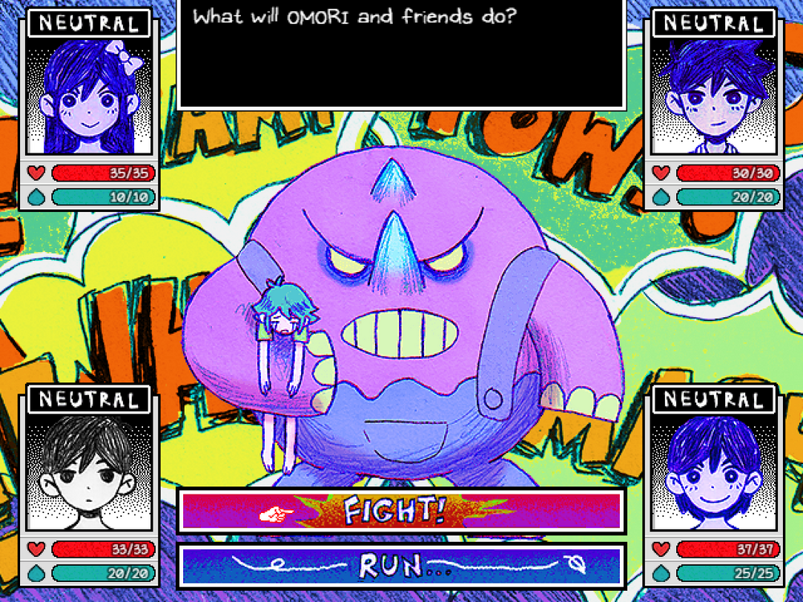
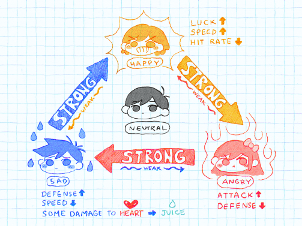

ABOUT

Explore a strange world full of colorful
friends and foes. Navigate through the
vibrant and the mundane in order to
uncover a forgotten past.
When the time comes, the path you’ve
chosen will determine your fate... and
perhaps the fate of others as well.
OMORI is a video game by OMOCAT. It has
been in production since 2014 and was
released for Steam (PC/Mac) on December
25th, 2020.
GAMEPLAY
 OMORI features many traditional RPG elements but contains a very
unique battle system. The player controls a party of four characters
who travel through the game's colorful two-dimensional world with
no accessible overworld map. Areas can "loop" into each other,
making the two-dimensional OMORI-verse feel uniquely three-
dimensional.


Various helpful items are spread throughout the world. Some items
can be gained by breaking the that are in each
location. There are many buildings, rooms, and NPCs to explore.
Interacting with the on the heals the
team, while interacting with the allows the player to
save the game.
OMORI features many traditional RPG elements but contains a very
unique battle system. The player controls a party of four characters
who travel through the game's colorful two-dimensional world with
no accessible overworld map. Areas can "loop" into each other,
making the two-dimensional OMORI-verse feel uniquely three-
dimensional.


Various helpful items are spread throughout the world. Some items
can be gained by breaking the that are in each
location. There are many buildings, rooms, and NPCs to explore.
Interacting with the on the heals the
team, while interacting with the allows the player to
save the game.
BATTLES
The battle system in OMORI is described as "a traditional turn-based
battle system with untraditional statuses and states based off real
human emotions and conditions". When physical contact occurs
between a character and an enemy on the map, the screen switches
to battle mode.


Battles are fought against with various capacities of heart,
juice and attack. The can earn experience and
level up. This increases the character's attributes such as attack,
defense, speed, luck, accuracy, juice and heart.
EMOTIONS
Friends and enemies can be affected by emotion. Emotions can be
changed by using a skill or item during battle. Certain ENEMIES'S
abilities may also affect characters' emotions. Different emotions
have different effects and last for a few turns. The default emotion is
always NEUTRAL.
